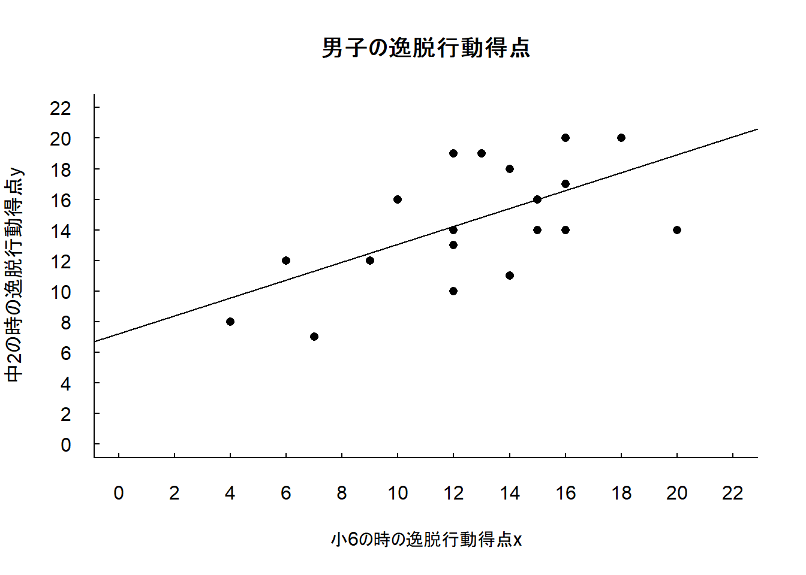
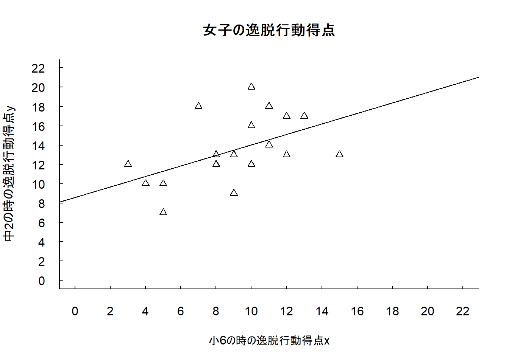
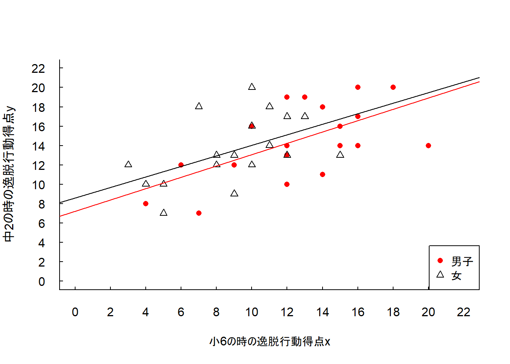

3.2.1 逸脱行動データへの適応(p.55-57)
- 教科書(3.11)式は回帰直線と呼ばれます。
\[ \hat{y} = a + bx \tag{3.11}\\ \]
- (3.12)式で定義される最小2乗基準\(Q\)を最小化する\(a\)，\(b\)の値は(3.13)式，(3.14)式になります。
\[ \begin{align} b &= r \frac{s _{x}}{s _{y}}\tag{3.13}\\ a &= \bar{y} - b \bar{x} \tag{3.14}\\ \end{align} \]
- \(a\)，\(b\)は回帰直線の切片と傾きを表します。
男子の逸脱行動データ(
dat_M)で\(a\)，\(b\)を計算してみましょう。共分散\(s _{xy}\)と変数\(x\)の標準偏差\(s _{x}\)，変数\(y\)の標準偏差\(s_{y}\)は先ほど計算した
soukan，sd_x，sd_yを使います。
## [1] 0.5848126## [1] 7.22288- \(\hat{y}\) = 7.22 + 0.58\(x\)という結果になりました。
- 数値を丸めているので教科書の値と完全に一致しませんが，同様の値が得られていることがわかります(教科書p.56の注6)を確認しください)。
- 同様に女子の逸脱行動データでも\(a\)と\(b\)を計算します。
- 女子の逸脱行動データを
dat_Fというオブジェクトに代入します。
- 標準偏差と相関係数を計算します。
hensa_x_F <- dat_F$Grade_6th - mean(dat_F$Grade_6th)
hensa_y_F <- dat_F$Grade_8th - mean(dat_F$Grade_8th)
sd_x_F <- sqrt(mean(hensa_x_F ^2))
sd_y_F <- sqrt(mean(hensa_y_F ^2))
sd_x_F## [1] 3.014963## [1] 3.247691## [1] 0.5050212- \(a\)，\(b\)を計算します。
## [1] 0.5440044## [1] 8.608361- 回帰直線は\(\hat{y}\) = 8.61 + 0.54\(x\)になります。
- 教科書と同様の結果が得られることを確認してください。
- 図3-5を実際に書いてみましょう。
- まずは男子のデータで散布図を描き，その上に回帰直線を追加します。
- 図3-1で使用したコードを使って描いていきます。
plot()関数で描いた図に線を上書きするabline()関数を使います。- 図3-1では引数で
hとvに値を指定しました。hとvはそれぞれ水平線(horizontal line)，垂直線(vertical line)を引くための引数です。
- 今回は傾きと切片がある線を引くので，引数の
aとbを使います。aとbにそれぞれ切片と傾きの値を与えることで線を引くことができます(?ablineとコンソールに入力することでヘルプを確認できます)。
- 図3-1では引数で
plot(dat_M$Grade_6th, dat_M$Grade_8th,
pch = 16,
xlim = c(0, 22),
ylim = c(0,22),
las = 1,
bty = "l",
tcl = 0.2,
xaxp = c(0, 22, 11),
yaxp = c(0, 22, 11),
xlab = "小6の時の逸脱行動得点x",
ylab = "中2の時の逸脱行動得点y",
main = "男子の逸脱行動得点")
abline(a = a_M, b = b_M)
- 同様に女子のデータをプロットします。
plot(dat_F$Grade_6th, dat_F$Grade_8th,
pch = 2,
xlim = c(0, 22),
ylim = c(0,22),
las = 1,
bty = "l",
tcl = 0.2,
xaxp = c(0, 22, 11),
yaxp = c(0, 22, 11),
xlab = "小6の時の逸脱行動得点x",
ylab = "中2の時の逸脱行動得点y",
main = "女子の逸脱行動得点")
abline(a = a_F, b = b_F)
plot()関数の引数pchで散布図のマーカーを三角に変更しています。abline()関数では，女子のデータで計算した結果a_Fとb_Fを傾きと切片に指定しています。男子と女子のデータを1つの図にプロットします。
男子のマーカーと回帰直線は赤色に変更しています。
plot(0, 0,
type = "n",
xlim = c(0, 22),
ylim = c(0,22),
las = 1,
bty = "l",
tcl = 0.2,
xaxp = c(0, 22, 11),
yaxp = c(0, 22, 11),
xlab = "小6の時の逸脱行動得点x",
ylab = "中2の時の逸脱行動得点y")
points(dat_M$Grade_6th, dat_M$Grade_8th,
pch = 16, col = "red")
points(dat_F$Grade_6th, dat_F$Grade_8th,
pch = 2)
abline(a = a_M, b = b_M,
col = "red")
abline(a = a_F, b = b_F)
legend("bottomright",
legend = c("男子", "女"),
pch = c(16, 2),
col = c("red", "black"))
- 男女の逸脱行動データの散布図に，それぞれの回帰直線\(\hat{y}\) = 7.22 + 0.58\(x\)と\(\hat{y}\) = 8.61 + 0.54\(x\)が書き込まれていることを確認してください。
- ここまで(3.13)式，(3.14)式を使って回帰直線の傾きと切片を計算しました。
- Rには回帰分析を行う関数として
lm()関数が備わっています(lmはliner model(線形モデル)の頭文字です)。
lm()関数を使って回帰直線を求めてみましょう。
lm()関数ではformulaというクラスのオブジェクトを使ってモデル式を指定します。formulaオブジェクトでは独立変数と従属変数を~(チルダ)でつなぎ，従属変数 ~ 独立変数という書き方をします。
- 今回のデータでは，小6のときの逸脱行動得点から中2の時の逸脱行動得点を予測するので，
Grade_8th ~ Grade_6thとなります。
lm()関数を使って回帰分析を行った結果をそれぞれfit_M，fit_Fというオブジェクトに代入します。lm()関数の引数dataで使うデータフレームを指定します。今回dat_Mとdat_Fでは使用している列名が同じなので，どちらもformulaオブジェクト内では同じ列名(Grade_8thとGrade_6th)を使用しています。
fit_M <- lm(Grade_8th ~ Grade_6th, data = dat_M)
fit_F <- lm(Grade_8th ~ Grade_6th, data = dat_F)
fit_M##
## Call:
## lm(formula = Grade_8th ~ Grade_6th, data = dat_M)
##
## Coefficients:
## (Intercept) Grade_6th
## 7.2229 0.5848##
## Call:
## lm(formula = Grade_8th ~ Grade_6th, data = dat_F)
##
## Coefficients:
## (Intercept) Grade_6th
## 8.608 0.544- 回帰係数を確認するには
Coefficientsを確認します。
- 切片\(a\)は
Intercept，傾き\(b\)はGrade_6thの値を読み取ります。
- より詳しい分析結果を確認するには，分析結果を代入したオブジェクトに対して
summary()関数を適用します。
##
## Call:
## lm(formula = Grade_8th ~ Grade_6th, data = dat_M)
##
## Residuals:
## Min 1Q Median 3Q Max
## -4.9191 -2.1413 -0.1179 2.6746 4.7594
##
## Coefficients:
## Estimate Std. Error t value Pr(>|t|)
## (Intercept) 7.2229 2.4519 2.946 0.00865 **
## Grade_6th 0.5848 0.1846 3.169 0.00532 **
## ---
## Signif. codes: 0 '***' 0.001 '**' 0.01 '*' 0.05 '.' 0.1 ' ' 1
##
## Residual standard error: 3.219 on 18 degrees of freedom
## Multiple R-squared: 0.3581, Adjusted R-squared: 0.3224
## F-statistic: 10.04 on 1 and 18 DF, p-value: 0.005316##
## Call:
## lm(formula = Grade_8th ~ Grade_6th, data = dat_F)
##
## Residuals:
## Min 1Q Median 3Q Max
## -4.5044 -1.5084 -0.5484 1.7856 5.9516
##
## Coefficients:
## Estimate Std. Error t value Pr(>|t|)
## (Intercept) 8.6084 2.0592 4.180 0.000562 ***
## Grade_6th 0.5440 0.2191 2.482 0.023136 *
## ---
## Signif. codes: 0 '***' 0.001 '**' 0.01 '*' 0.05 '.' 0.1 ' ' 1
##
## Residual standard error: 2.955 on 18 degrees of freedom
## Multiple R-squared: 0.255, Adjusted R-squared: 0.2137
## F-statistic: 6.163 on 1 and 18 DF, p-value: 0.02314- 回帰係数は，先ほどと同様に
CoefficientsのEstimate行の値を確認してください。
- それぞれの回帰直線\(\hat{y}\) = 7.22 + 0.58\(x\)と\(\hat{y}\) = 8.61 + 0.54\(x\)と値が一致していることが確認できます。
- 実際に回帰分析を実行するには
lm()関数の結果に対してsummary()関数を適用するのを忘れないようにしてください。
- 重回帰分析や共分散分析も
lm()関数を使って計算することができます(分散分析もlm()関数を使って計算する方法があります)。